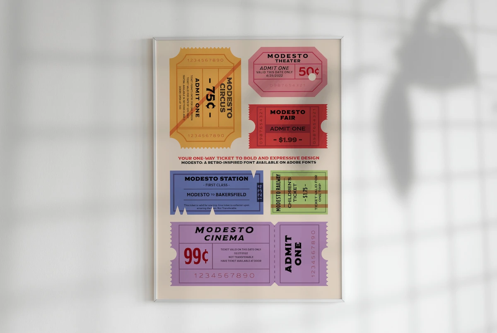
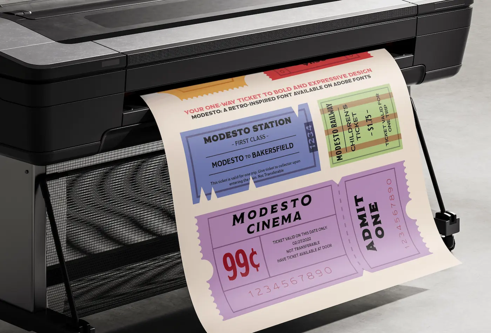
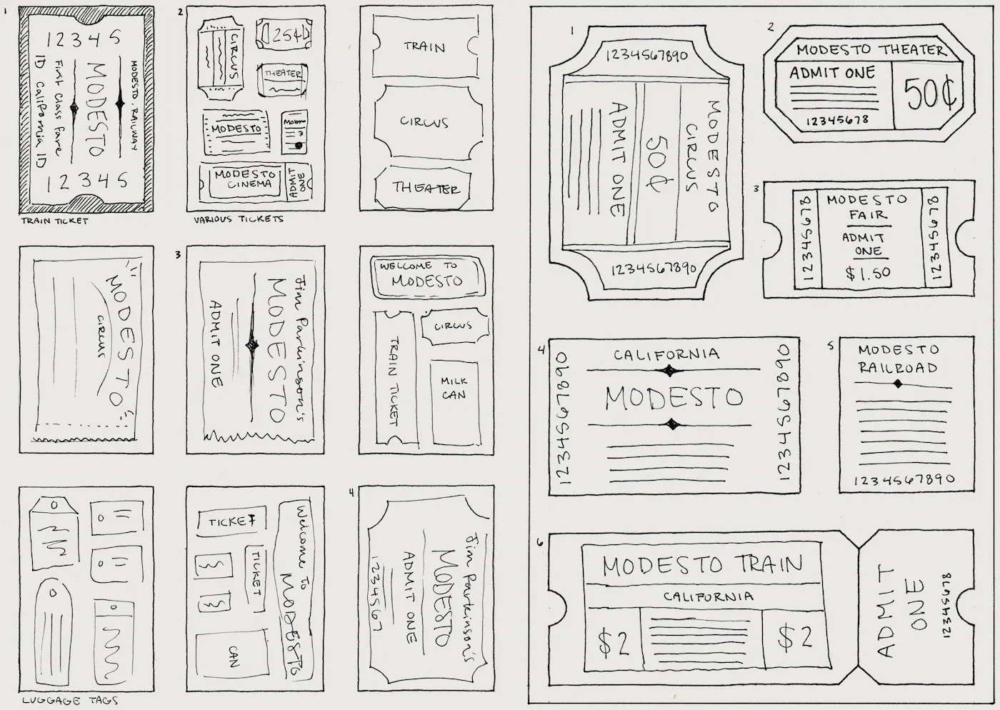
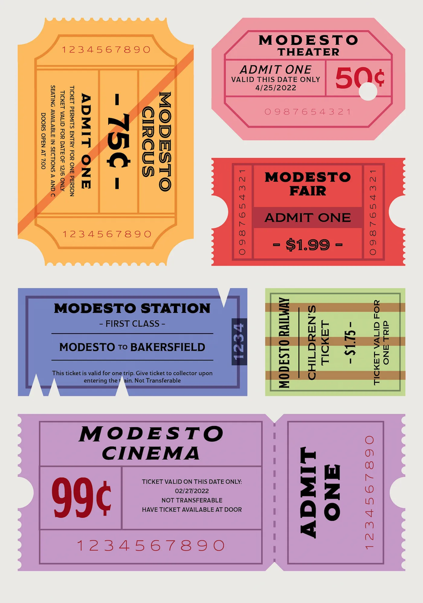
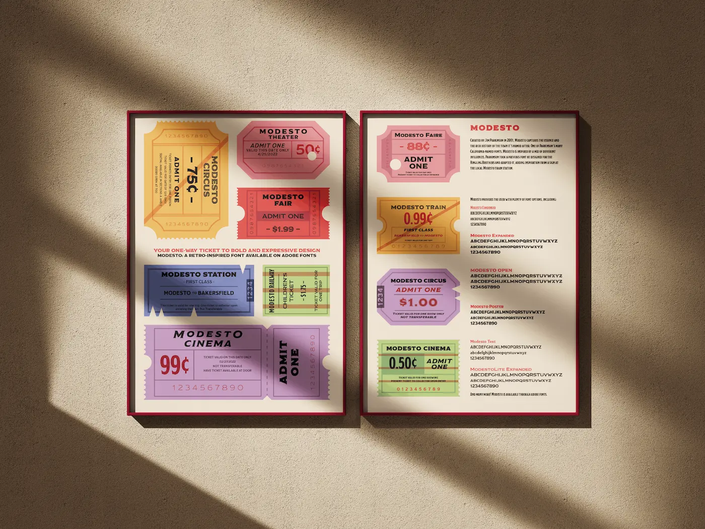

Modesto
A two-sided type poster exploring the history and personality of the Modesto typeface.
Modesto is a retro-inspired typeface available on Adobe Fonts, drawn from the bold lettering found on vintage circus posters and American railroad signage. This project tasked me with designing a poster that showcased the typeface's range, communicating its historical roots while demonstrating its versatility across weights and styles.


Process
The concept came from leaning into Modesto's origins. Rather than a standard type specimen, I designed a collection of vintage tickets — each one inspired by a different piece of Americana the typeface draws from. Railroad tickets, circus admissions, movie stubs, and county fair passes each gave a different context for the type to live in.

Colors
The color palette was pulled directly from the era. Warm yellows, dusty pinks, muted reds, and sage greens feel lifted from a 1940s circus broadside. Each ticket uses a limited two or three color combination to keep the vintage feel intact. Red markings and hole punches show the use of each ticket, designs pulled from vintage ticket references
Details

The reverse side of the poster functions as a full type specimen, showing every weight and style Modesto comes in. Together the two sides work as both a piece of design, an advertisement, and a practical reference tool.
